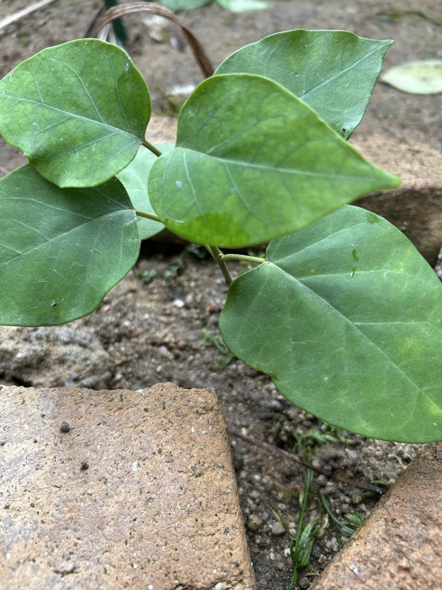

まだ小さなキジョランの、葉を広げた姿
9月12日のキジョランです。地面に近い位置で、丸みのある幅広い葉を広げています。まだ小さな株ですが、一枚一枚の葉には存在感があり、中央の茎を囲むように、向きを変えながら重なっています。
今のところ、見える範囲には花や蕾はありません。開花前の蕾がふくらんでいる様子も見られず、この日の記録は、葉と茎の姿が中心になります。

丸みのある葉と、とがった葉先
葉は全体にふっくらと幅があり、先端はとがっています。丸い部分から葉先に向かって細くなる形が分かりやすく、細長い葉の植物とは違う印象です。
中央から左右へ葉脈が伸び、その間にも細かな筋が見えます。葉の表面は比較的なめらかで、薄くひらひらした感じではなく、しっかりとした厚みを感じます。
葉は平らにそろっているわけではありません。手前へ向くもの、奥へ立ち上がるもの、左右に広がるものがあり、小さな株の中でも葉の重なりに立体感があります。中央の葉が後ろの葉を隠しているため、見えている枚数だけで株全体の葉数を決めることはできませんが、数枚の幅広い葉が株の姿を作っています。
葉ごとに異なる緑色
葉色には違いがあります。左右や奥の葉は落ち着いた緑色ですが、中央の葉には黄緑色が混じり、葉脈の間にまだらな濃淡が見えます。
中央の葉の下側には、周囲より明るい緑色に見える部分もあります。一枚の葉の中でも色が均一ではなく、濃いところと淡いところが入り交じっています。
ただ、葉の向きや光の当たり方によっても見え方は変わります。この色の違いだけで、葉が若いのか、何かの影響を受けているのかまでは分かりません。まずは今の葉色を残し、今後、新しく出る葉や今ある葉がどう変わるのかを見ていきたいと思います。
大きな傷みは目立ちませんが、小さな変化もあります
見える葉には、大きな穴がいくつも開いたような食害や、広い範囲が茶色く枯れた部分は目立ちません。葉の面はおおむね保たれています。
一方で、葉の縁には小さな欠けや、少しいびつに見える部分があります。葉の表面にも白っぽい小さな点が見られますが、付着したものなのか、葉そのものの変化なのかは、この状態では分かりません。
小さな点や葉色の違いも含めて、今の姿として記録しておきます。これから葉が増えたときに、同じような特徴が見られるのかも気になるところです。
葉の間に見える細い茎
葉の間には細い緑色の茎が見え、そこから葉柄が伸びています。葉が大きいため茎は隠れがちですが、株の中央で葉を支えている様子が分かります。
この日の姿では、長いつるが伸びて周囲に巻き付いているところは見られません。葉を広げたコンパクトな姿が中心で、つるの伸びよりも葉の形が目を引きます。
株元や茎の先端は葉に隠れている部分があるため、新芽の細かな状態までは分かりません。今後は、葉が増える様子とともに、茎がどちらへ伸びていくのかも見ていきたいと思います。
花や蕾は、これからの観察の楽しみに
9月12日のキジョランは、花を楽しむ姿というよりも、葉を広げた小さな株の姿です。花や蕾が見えないため、開花が近いかどうかはまだ分かりません。
今は、幅広い葉の形、緑色の濃淡、葉の間に見える細い茎が、この株の見どころになっています。まずはこの日の姿を出発点として、葉やつるがどのように育っていくのか、引き続き記録していきたいと思います。